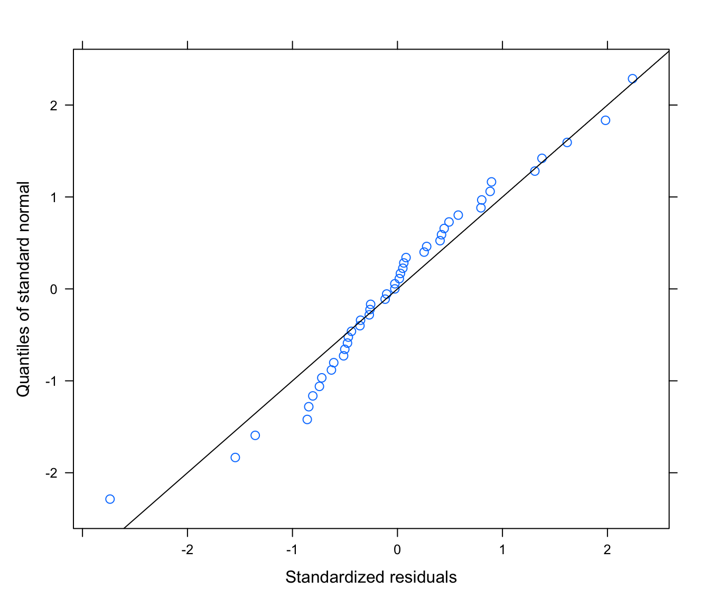

BI5302 Mixed effects models exercise report
Thomas Cornulier
02 November, 2021
Setup global options for knitr package. Normally I wouldn’t display these but I’ll leave them here for your information.
knitr::opts_chunk$set(echo= TRUE, message= FALSE, warning= FALSE, eval= FALSE, cache= FALSE, fig.height= 6)
SOLUTIONS<- TRUE
Exercise: MIxed effects models - RIKZ data
0. In this exercise we will use the RIKZ data set (in the ‘RIKZRichness.txt’ file). The aim of the research was to explain the variation in species richness (R) using the variable Normal Amsterdam Peil (NAP) using data collected from various beaches in the Netherlands. All measurements were taken in June 2002.Please note that the full analysis of these data is much more involved than the one suggested here. The less self-explanatory variables are:
R: Species richness (number of species). This is the response variableangle1: angle of individual stations on a beachangle2: angle of the beachexposure: index summarizing multiple variables: wave action, length of the surf zone, slope, grain size and depth of anaerobic layersorting1: index of particle structure at individual sampling stationNAP: height of the sampling station relative to the average sea level
1. Load the nlme package to make the lme() function available. Also load the lattice package. Import the data file RIKZRichness.txt into R. How many observations are in the dataset? How many variables are in the dataset which could be relevant as predictors of species richness?
# 1. Make functions in the nlme and lattice package available
library(nlme)
library(lattice)
rikz<- read.table("data/RIKZRichness.txt", header = TRUE, stringsAsFactors = TRUE)
str(rikz)## 'data.frame': 45 obs. of 15 variables:
## $ Sample : int 1 2 3 4 5 6 7 8 9 10 ...
## $ R : int 11 10 13 11 10 8 9 8 19 17 ...
## $ week : int 1 1 1 1 1 1 1 1 1 1 ...
## $ angle1 : int 32 62 65 55 23 129 126 52 26 143 ...
## $ angle2 : int 96 96 96 96 96 89 89 89 89 89 ...
## $ exposure : int 10 10 10 10 10 8 8 8 8 8 ...
## $ salinity : num 29.4 29.4 29.4 29.4 29.4 29.6 29.6 29.6 29.6 29.6 ...
## $ temperature : num 17.5 17.5 17.5 17.5 17.5 20.8 20.8 20.8 20.8 20.8 ...
## $ NAP : num 0.045 -1.036 -1.336 0.616 -0.684 ...
## $ penetrability: num 254 227 237 249 252 ...
## $ grainsize : num 222 200 194 221 202 ...
## $ humus : num 0.05 0.3 0.1 0.15 0.05 0.1 0.1 0.1 0.15 0 ...
## $ chalk : num 2.05 2.5 3.45 1.6 2.45 2.5 1.85 1.7 2.3 2.6 ...
## $ sorting1 : num 69.8 59 59.2 67.8 57.8 ...
## $ Beach : int 1 1 1 1 1 2 2 2 2 2 ...# 12 potential predictors (ignoring 'sample' and 'sorting', and the response "R")
# 45 observations
2. Convert the variable Beach to a factor and store it as a new variable called Fbeach in the same dataframe. Log-transform the species richness (R) variable and store as logR. Why do you think you are advised to do this?
rikz$Fbeach<- factor(rikz$Beach)
# there is no natural ordering of beaches, so treat as factor
# to be able to estimate variation between beaches
rikz$logR<- log(rikz$R + 1)
# Species richness is a count, so should be positive
# We would also expect greater variance for higher counts,
# So log transform should help stabilizing variance
3. How many beaches are there? How many observations for each beach?
table(rikz$Fbeach)##
## 1 2 3 4 5 6 7 8 9
## 5 5 5 5 5 5 5 5 5# 9 beaches
# 5 obs per beach on all beaches
4. Plot the relationship between log-richness (logR) and NAP conditional on each Beach (Hint: use the coplot or xyplot functions). Describe this relationship. Is the relationship the same for each beach?
with(rikz, plot(logR ~ NAP, col = Beach, pch = Beach))
# there appears to be a decline in species richness with NAP
xyplot(logR ~ NAP|Fbeach, data = rikz)# not all beaches cover the whole range of NAP in the sample
# negative effect of NAP suggested in most beaches, but not obvious in all
# more fancy plot with lines of best fit for each beach
coplot(logR ~ NAP|Fbeach,
data = rikz,
panel = function(x, y, ...) {
tmp <- lm(y ~ x, na.action = na.omit)
abline(tmp)
points(x, y) })# confirms comments above;
# very few points to support each fitted line -> refrain from over-interpreting
5. Fit a simple linear model (using the lm function) with log transformed R as the response variable and NAP as the predictor. Produce the usual model validation plots of the residuals using the par(mfrow= c(2, 2)) and the plot functions. Identify any issues highlighted by these plots. What inference does this model suggest? In addition, extract the residuals (use the resid function) and plot the residuals against beach. Can you see a problem?
rikz.lm<- lm(logR ~ NAP, data = rikz)
# model validation
par(mfrow = c(2, 2))
plot(rikz.lm)# residuals vs fitted suggest horseshoe-shape trend:
# could be sign of a non linear relationship?
# Normality (from QQ plot) poor
# extract residuals from model object and plot against beach
res.lm<- resid(rikz.lm)
par(mfrow = c(1, 1))
plot(res.lm ~ rikz$Fbeach)
abline(h = 0, col = 2, lty = 2)# some beaches have all positive residuals, some all negative
anova(rikz.lm)## Analysis of Variance Table
##
## Response: logR
## Df Sum Sq Mean Sq F value Pr(>F)
## NAP 1 13.873 13.8734 47.75 1.736e-08 ***
## Residuals 43 12.493 0.2905
## ---
## Signif. codes: 0 '***' 0.001 '**' 0.01 '*' 0.05 '.' 0.1 ' ' 1# NAP effect hugely significant
summary(rikz.lm)##
## Call:
## lm(formula = logR ~ NAP, data = rikz)
##
## Residuals:
## Min 1Q Median 3Q Max
## -0.9091 -0.3628 -0.1363 0.2141 1.2023
##
## Coefficients:
## Estimate Std. Error t value Pr(>|t|)
## (Intercept) 1.82790 0.08523 21.45 < 2e-16 ***
## NAP -0.56473 0.08172 -6.91 1.74e-08 ***
## ---
## Signif. codes: 0 '***' 0.001 '**' 0.01 '*' 0.05 '.' 0.1 ' ' 1
##
## Residual standard error: 0.539 on 43 degrees of freedom
## Multiple R-squared: 0.5262, Adjusted R-squared: 0.5152
## F-statistic: 47.75 on 1 and 43 DF, p-value: 1.736e-08# NAP effect negative
# 43 residual degrees of freedom
# (45-2= sample size - 1 for intercept - 1 for slope)
6. Fit a new linear model as above but with NAP and FBeach as predictors. Extract the residuals and re-plot the residuals for each beach. Does this look better? How many more parameters have you estimated in this model?
rikz.lm2 <- lm(logR ~ NAP + Fbeach, data = rikz)
# model validation
par(mfrow = c(2, 2))
plot(rikz.lm2)# a bit better,
# less of a trend in the residuals (mostly due to 2-3 residuals, so no big deal)
# Better normality, but some annoyingly large residuals
# plot residuals vs Beach
# looks better but possibly some heterogeneity of variance among beaches
# (remember, only 5 obs per beach, so not conclusive)
res.lm2 <- resid(rikz.lm2)
par(mfrow = c(1, 1))
plot(res.lm2 ~ rikz$Fbeach, xlab = "Beach", ylab = "residuals")
abline(h = 0, lty = 2, col = 2)# produce a summary of the analysis
summary(rikz.lm2)##
## Call:
## lm(formula = logR ~ NAP + Fbeach, data = rikz)
##
## Residuals:
## Min 1Q Median 3Q Max
## -1.16096 -0.18464 -0.01796 0.18628 0.88732
##
## Coefficients:
## Estimate Std. Error t value Pr(>|t|)
## (Intercept) 2.23644 0.18456 12.118 4.44e-14 ***
## NAP -0.51043 0.06671 -7.651 5.63e-09 ***
## Fbeach2 0.42025 0.26193 1.604 0.11760
## Fbeach3 -0.83201 0.25905 -3.212 0.00283 **
## Fbeach4 -0.80163 0.26609 -3.013 0.00479 **
## Fbeach5 -0.24501 0.26704 -0.917 0.36516
## Fbeach6 -0.58716 0.26142 -2.246 0.03112 *
## Fbeach7 -0.69613 0.27237 -2.556 0.01509 *
## Fbeach8 -0.57004 0.26527 -2.149 0.03864 *
## Fbeach9 -0.53503 0.26644 -2.008 0.05240 .
## ---
## Signif. codes: 0 '***' 0.001 '**' 0.01 '*' 0.05 '.' 0.1 ' ' 1
##
## Residual standard error: 0.4065 on 35 degrees of freedom
## Multiple R-squared: 0.7807, Adjusted R-squared: 0.7243
## F-statistic: 13.84 on 9 and 35 DF, p-value: 3.82e-09# 8 additional parameters estimated (error df= 35 compared to 43 for the lm without beach)
# Are we interested in the value of the differences between beaches?
# If not, that's quite a lot of parameters to be estimating,
# given the already low sample size
7. Fit a linear mixed effects model using the lme function and assign it to an object called rikz.lme. As before use log-richness (logR) as the response variable and NAP as the predictor, but including FBeach as a random effect this time.
rikz.lme <- lme(fixed = logR ~ NAP, random = ~ 1|Fbeach, data = rikz)
# This is also known as a "random intercept only" model.
# Assumes these beaches are a random sample from a wider population of beaches.
# Therefore assumes the Fbeach intercepts, or differences between beaches,
# are normally distributed
8. Extract the normalized residuals using the residuals function and the argument type= "normalized". Extract the fitted values using the fitted function. Plot the residuals vs the fitted values and include a horizontal line at residual value= 0. In addition, plot the normalized residuals for each Beach. How does this plot compare with the equivalent plots from the linear models? Is the model an improvement?
res.lme <- residuals(rikz.lme, type = "normalized")
# many standard functions such as 'residuals', 'fitted', 'plot', etc have
# a special "method" (= version) when applied to lme objects which changes
# their default behaviour.
# To access the help pages, type ?functionOfInterest.lme
# the help page for residuals is ?residuals.lme
fit.lme <- fitted(rikz.lme)
# ?fitted.lme
plot(res.lme ~ fit.lme, xlab = "fitted", ylab = "normalised residuals")
# ?plot.lme
abline(h = 0, lty = 2, col = 2)# Not great, but so few observations that it is hard to judge!
# plot residuals for each beach.
plot(res.lme ~ rikz$Fbeach, ylab = "normalised residuals", xlab = "Beach")
abline(h = 0, lty = 2, col = 2)# Quite similar to the rikz.lm2 model, not better
# But much better than rikz.lm
# or use built in functions for lme objects
plot(rikz.lme,
form = resid(., type = "p") ~ fitted(.)|Fbeach, abline = 0, lty = 2)# this plots the standardised (or Pearson) residuals versus fitted for
# each beach. Quite variable between beaches, but difficult to judge if
# this is could be problematic
# boxplots per beach:
plot(rikz.lme, Fbeach ~ resid(.), abline = 0)
9. Produce a summary of the model output using the summary function. What is the within beach (residual) variation? What is the between beach variation? Remember, the output from the lme function gives these values in standard deviation units, not as variances, so you will need to calculate the variances manually. Compare the parameter estimate for NAP and the standard error of the parameter estimate to those obtained from the linear models.
summary(rikz.lm)##
## Call:
## lm(formula = logR ~ NAP, data = rikz)
##
## Residuals:
## Min 1Q Median 3Q Max
## -0.9091 -0.3628 -0.1363 0.2141 1.2023
##
## Coefficients:
## Estimate Std. Error t value Pr(>|t|)
## (Intercept) 1.82790 0.08523 21.45 < 2e-16 ***
## NAP -0.56473 0.08172 -6.91 1.74e-08 ***
## ---
## Signif. codes: 0 '***' 0.001 '**' 0.01 '*' 0.05 '.' 0.1 ' ' 1
##
## Residual standard error: 0.539 on 43 degrees of freedom
## Multiple R-squared: 0.5262, Adjusted R-squared: 0.5152
## F-statistic: 47.75 on 1 and 43 DF, p-value: 1.736e-08# Estimate Std. Error t value Pr(>|t|)
# (Intercept) 1.82790 0.08523 21.45 < 2e-16 ***
# NAP -0.56473 0.08172 -6.91 1.74e-08 ***
summary(rikz.lm2)##
## Call:
## lm(formula = logR ~ NAP + Fbeach, data = rikz)
##
## Residuals:
## Min 1Q Median 3Q Max
## -1.16096 -0.18464 -0.01796 0.18628 0.88732
##
## Coefficients:
## Estimate Std. Error t value Pr(>|t|)
## (Intercept) 2.23644 0.18456 12.118 4.44e-14 ***
## NAP -0.51043 0.06671 -7.651 5.63e-09 ***
## Fbeach2 0.42025 0.26193 1.604 0.11760
## Fbeach3 -0.83201 0.25905 -3.212 0.00283 **
## Fbeach4 -0.80163 0.26609 -3.013 0.00479 **
## Fbeach5 -0.24501 0.26704 -0.917 0.36516
## Fbeach6 -0.58716 0.26142 -2.246 0.03112 *
## Fbeach7 -0.69613 0.27237 -2.556 0.01509 *
## Fbeach8 -0.57004 0.26527 -2.149 0.03864 *
## Fbeach9 -0.53503 0.26644 -2.008 0.05240 .
## ---
## Signif. codes: 0 '***' 0.001 '**' 0.01 '*' 0.05 '.' 0.1 ' ' 1
##
## Residual standard error: 0.4065 on 35 degrees of freedom
## Multiple R-squared: 0.7807, Adjusted R-squared: 0.7243
## F-statistic: 13.84 on 9 and 35 DF, p-value: 3.82e-09# Estimate Std. Error t value Pr(>|t|)
# (Intercept) 2.23644 0.18456 12.118 4.44e-14 ***
# NAP -0.51043 0.06671 -7.651 5.63e-09 ***
summary(rikz.lme)## Linear mixed-effects model fit by REML
## Data: rikz
## AIC BIC logLik
## 73.17517 80.21997 -32.58758
##
## Random effects:
## Formula: ~1 | Fbeach
## (Intercept) Residual
## StdDev: 0.3704644 0.4064515
##
## Fixed effects: logR ~ NAP
## Value Std.Error DF t-value p-value
## (Intercept) 1.8131735 0.13943157 35 13.004039 0
## NAP -0.5223798 0.06562824 35 -7.959681 0
## Correlation:
## (Intr)
## NAP -0.164
##
## Standardized Within-Group Residuals:
## Min Q1 Med Q3 Max
## -2.73773234 -0.50167111 -0.02510498 0.44494919 2.23906106
##
## Number of Observations: 45
## Number of Groups: 9# Value Std.Error DF t-value p-value
# (Intercept) 1.8131735 0.13943157 35 13.004039 0
# NAP -0.5223798 0.06562824 35 -7.959681 0
# The model without Fbeach (rikz.lm) has the largest (negative) effect of NAP
# and the largest uncertainty (SE) for it.
# The models with fixed or random Fbeach effect (rikz.lm2 or rikz.lme) have the
# most similar estimates of the slope and of the standard errors of the
# population-level coefficients (general Intercept and slope)
# Their SE for the Intercept is larger than that of the model without Fbeach,
# because they take the differences between beaches into account, therefore the
# number of degrees of freedom ("effective sample size") for the
# calculation of the intercept is less than the total sample size
# (residual df = 35 for rikz.lme instead of 43 for the rikz.lm model)
# For the rikz.lm2 model, this is worse because the intercept is for
# the reference beach only (Beach 1), so the effective sample size is
# only about 5
10. (Optional) convert your RIKZ dataframe to a grouped data object using the command: rikz<- groupedData(logR~NAP|Fbeach, data= rikz). This will allow you to use some convenience functions that come with the nlme package. Investigate what the following lines of code do: plot(augPred(rikz.lme), aspect="xy", grid=T), as well as plot(rikz.lme, logR~ fitted(.), id=0.05, adj=-0.3) and qqnorm(rikz.lme, ~resid(.),abline= c(0,1)). Do you think that fitting a random intercept model adequately explains the relationship between Richness and NAP for each Beach?
rikz <- groupedData(logR ~ NAP|Fbeach, data = rikz)
# plot predicted values for each beach
plot(augPred(rikz.lme), aspect = "xy", grid = TRUE)# plot observed vs fitted values
plot(rikz.lme, logR ~ fitted(.), id = 0.05, adj = -0.3)# normally distributed residuals?
qqnorm(rikz.lme, ~ resid(., type = "normalized"), abline = c(0, 1))
# abline(0, 1) only makes sense if the values are normalized
# normally distributed random effects?
qqnorm(rikz.lme, ~ ranef(.))# values are not normalized, so no 'abline'
# instead we can get the correct reference line manually:
qqnorm(unlist(ranef(rikz.lme)))
qqline(unlist(ranef(rikz.lme)), col = 2)# with only 9 levels for Fbeach, a qqplot isn't that easy to interpret:
# how bad is bad?
# a histogram is no better with just 9 data points:
hist(unlist(ranef(rikz.lme)))# Overall, not an unreasonable model.
# Unfortunately, sample size is just too small to tell if this
# is a good model structure from the data alone.
11. Perhaps an improvement to the model would be to allow both the intercepts and the NAP slopes to vary randomly with each beach (as opposed to an intercepts only model). You can fit this model using the lme function and specify the random effects as random= ~ NAP|Fbeach. Fit the model and assign it to a new variable called rikz.lme2. The random= ~ NAP|Fbeach formula assumes that there is variation in the intercept as well as the effect of NAP between beaches. When a continuous predictor is in the random formula it also needs to be in the fixed formula: The effect in formula of the fixed part measures the mean coefficient at the population level (average across all beaches), and the effect in the random part formula measures variation around that mean coefficient value between beaches.
# We can either use the update function or specify the model long hand
rikz.lme2 <- update(rikz.lme, random = ~ NAP|Fbeach)
# or long hand version
rikz.lme2<- lme(fixed = logR ~ 1 + NAP, random = ~ 1 + NAP|Fbeach, data = rikz)
# it would be incorrect to only have the population intercept in the fixed part
# of the model but no NAP effect, like this:
rikz.lme2bad <- lme(fixed = logR ~ 1, random = ~ NAP|Fbeach, data = rikz)
12. Plot the fitted lines using
plot(augPred(rikz.lme2), aspect = "xy", grid = T)
and the residuals versus fitted with
plot(rikz.lme2, form = resid(., type = "p") ~ fitted(.)|Fbeach, abline = 0, lty = 2).
Normality of random intercepts:
par(mfrow = c(1, 2)),
hist(unlist(ranef(rikz.lme2)$'(Intercept)'), xlab = "Random Intercept", main = "")
and normality of random slopes:
hist(unlist(ranef(rikz.lme2)$'NAP'), xlab = "Random NAP effect", main = "").
Compare these to previous model. Is there an improvement?
# (assumes rikz is in Grouped Data format as above)
plot(augPred(rikz.lme2), aspect = "xy", grid = TRUE)plot(rikz.lme2,
form = resid(., type="p") ~ fitted(.)|Fbeach, abline = 0, lty = 2)# no more suggestion of trends in the residuals -> that's better than rikz.lme
# optional:
res.lme2 <- resid(rikz.lme2, type = "normalized")
fit.lme2 <- fitted(rikz.lme2)
plot(res.lme2 ~ fit.lme2, xlab = "fitted", ylab = "normalised residuals")
abline(h= 0, lty= 2, col= 2)# plot residuals for each beach.
par(mfrow= c(1, 2))
plot(res.lme ~ rikz$Fbeach, ylab= "normalised residuals", xlab= "Beach",
main = "random intercept")
abline(h = 0, lty = 2, col = 2)
plot(res.lme2 ~ rikz$Fbeach, ylab = "normalised residuals", xlab = "Beach",
main = "random intercept and slope")
abline(h = 0, lty = 2, col = 2)# not clear if one is better than the other. With just 5 samples per beach,
# don't expect boxplot to look amazing!
# plot fitted vs observed
plot(rikz.lme2, logR ~ fitted(.), id = 0.05, adj = -0.3)
# intrigued by 'adj' argument?
# try without and see ?par
#normally distributed random effects?
qqnorm(rikz.lme2, ~ ranef(.))
# or using a DIY approach to extracting and plotting the random effects:
par(mfrow = c(1, 2))
hist(unlist(ranef(rikz.lme2)$'(Intercept)'), xlab = "Random Intercept", main = "")
hist(unlist(ranef(rikz.lme2)$'NAP'), xlab = "Random NAP effect", main = "")# not great for the intercept
# alright for the NAP slope
# but in truth, with 9 beaches only, any pattern would be compatible with
# a normal distribution!
# This model seems to meet most of the assumptions,
# Or at least there are too few data to say that it doesn't.
# But this is at the cost of a quite complex model (lots of parameters)
# and there is a good chance that we are overfitting the data.
13. Produce a summary of the random effects and fixed effects using the summary function. Compare these to the random intercept only model.
summary(rikz.lme)## Linear mixed-effects model fit by REML
## Data: rikz
## AIC BIC logLik
## 73.17517 80.21997 -32.58758
##
## Random effects:
## Formula: ~1 | Fbeach
## (Intercept) Residual
## StdDev: 0.3704644 0.4064515
##
## Fixed effects: logR ~ NAP
## Value Std.Error DF t-value p-value
## (Intercept) 1.8131735 0.13943157 35 13.004039 0
## NAP -0.5223798 0.06562824 35 -7.959681 0
## Correlation:
## (Intr)
## NAP -0.164
##
## Standardized Within-Group Residuals:
## Min Q1 Med Q3 Max
## -2.73773234 -0.50167111 -0.02510498 0.44494919 2.23906106
##
## Number of Observations: 45
## Number of Groups: 9summary(rikz.lme2)## Linear mixed-effects model fit by REML
## Data: rikz
## AIC BIC logLik
## 73.83009 84.39729 -30.91504
##
## Random effects:
## Formula: ~1 + NAP | Fbeach
## Structure: General positive-definite, Log-Cholesky parametrization
## StdDev Corr
## (Intercept) 0.4254584 (Intr)
## NAP 0.2541920 -0.066
## Residual 0.3308370
##
## Fixed effects: logR ~ 1 + NAP
## Value Std.Error DF t-value p-value
## (Intercept) 1.8609544 0.1526225 35 12.193187 0
## NAP -0.5275355 0.1015965 35 -5.192457 0
## Correlation:
## (Intr)
## NAP -0.12
##
## Standardized Within-Group Residuals:
## Min Q1 Med Q3 Max
## -1.9853479 -0.4779993 -0.1235918 0.4321337 2.1590780
##
## Number of Observations: 45
## Number of Groups: 9# population-level estimates are quite similar
14. Use the anova function to compare between the two mixed effects models. Which model is preferred by which method? What is the null hypothesis you are testing? Why might you need to treat this test with caution?
# compare using anova() - treat with caution
anova(rikz.lme, rikz.lme2)## Model df AIC BIC logLik Test L.Ratio p-value
## rikz.lme 1 4 73.17517 80.21997 -32.58758
## rikz.lme2 2 6 73.83009 84.39729 -30.91504 1 vs 2 3.345082 0.1878# Model df AIC BIC logLik Test L.Ratio p-value
# rikz.lme 1 4 73.17517 80.21997 -32.58758
# rikz.lme2 2 6 73.83009 84.39729 -30.91504 1 vs 2 3.345082 0.1878
# LRT suggests the random slope is unnecessary
# AIC suggests the models are about equally good (but random slope worse)
# if we wanted to compare our fixed effects only model with both mixed models
#then we need to fit the fixed effects only model with gls function
rikz.gls <- gls(logR ~ NAP, data = rikz)
anova(rikz.gls, rikz.lme, rikz.lme2)## Model df AIC BIC logLik Test L.Ratio p-value
## rikz.gls 1 3 82.45981 87.74341 -38.22991
## rikz.lme 2 4 73.17517 80.21997 -32.58758 1 vs 2 11.284645 0.0008
## rikz.lme2 3 6 73.83009 84.39729 -30.91504 2 vs 3 3.345082 0.1878# the random intercept is clearly supported by all methods
# the random slope isn't
15. Using the model rikz.lme structure as a basis, use anova() to test if there is a significant effect of “temperature”, “grainsize” or “exposure”. Check the summary of the best model. What happened with the beach effect? What could that mean? Should we leave the model as it is?
rikz.lme.gs <- lme(fixed= logR ~ NAP + grainsize, random= ~ 1|Fbeach, data= rikz)
summary(rikz.lme.gs)## Linear mixed-effects model fit by REML
## Data: rikz
## AIC BIC logLik
## 85.34104 94.02939 -37.67052
##
## Random effects:
## Formula: ~1 | Fbeach
## (Intercept) Residual
## StdDev: 0.3118976 0.4207497
##
## Fixed effects: logR ~ NAP + grainsize
## Value Std.Error DF t-value p-value
## (Intercept) 2.3051733 0.5279832 34 4.365997 0.0001
## NAP -0.5397701 0.0689071 34 -7.833306 0.0000
## grainsize -0.0017836 0.0018665 34 -0.955608 0.3460
## Correlation:
## (Intr) NAP
## NAP -0.237
## grainsize -0.972 0.199
##
## Standardized Within-Group Residuals:
## Min Q1 Med Q3 Max
## -2.5983058 -0.5842972 -0.0845448 0.5122758 2.1573589
##
## Number of Observations: 45
## Number of Groups: 9rikz.lme.te <- lme(fixed= logR ~ NAP + temperature, random= ~ 1|Fbeach, data= rikz)
summary(rikz.lme.te)## Linear mixed-effects model fit by REML
## Data: rikz
## AIC BIC logLik
## 76.3963 85.08465 -33.19815
##
## Random effects:
## Formula: ~1 | Fbeach
## (Intercept) Residual
## StdDev: 0.3417426 0.4069673
##
## Fixed effects: logR ~ NAP + temperature
## Value Std.Error DF t-value p-value
## (Intercept) -0.3752649 1.5559401 35 -0.241182 0.8108
## NAP -0.5331456 0.0658856 35 -8.091994 0.0000
## temperature 0.1167607 0.0826987 7 1.411880 0.2009
## Correlation:
## (Intr) NAP
## NAP 0.084
## temperature -0.996 -0.099
##
## Standardized Within-Group Residuals:
## Min Q1 Med Q3 Max
## -2.7584248 -0.4828906 -0.0201458 0.4864118 2.1557143
##
## Number of Observations: 45
## Number of Groups: 9rikz.lme.ex <- lme(fixed= logR ~ NAP + exposure, random= ~ 1|Fbeach, data= rikz)
summary(rikz.lme.ex)## Linear mixed-effects model fit by REML
## Data: rikz
## AIC BIC logLik
## 65.07915 73.7675 -27.53957
##
## Random effects:
## Formula: ~1 | Fbeach
## (Intercept) Residual
## StdDev: 0.02548355 0.4072808
##
## Fixed effects: logR ~ NAP + exposure
## Value Std.Error DF t-value p-value
## (Intercept) 5.728645 0.6868231 35 8.340787 0e+00
## NAP -0.546077 0.0619164 35 -8.819590 0e+00
## exposure -0.382229 0.0669938 7 -5.705437 7e-04
## Correlation:
## (Intr) NAP
## NAP 0.019
## exposure -0.996 -0.050
##
## Standardized Within-Group Residuals:
## Min Q1 Med Q3 Max
## -2.50424801 -0.37535225 -0.04363322 0.35212009 2.33847806
##
## Number of Observations: 45
## Number of Groups: 9anova(rikz.lme, rikz.lme.gs)## Model df AIC BIC logLik Test L.Ratio p-value
## rikz.lme 1 4 73.17517 80.21997 -32.58758
## rikz.lme.gs 2 5 85.34104 94.02939 -37.67052 1 vs 2 10.16587 0.0014# warning that the wrong fitting method was used
anova(update(rikz.lme, method= "ML"), update(rikz.lme.gs, method= "ML"))## Model df AIC BIC logLik Test L.Ratio p-value
## update(rikz.lme, method = "ML") 1 4 67.35820 74.58485 -29.6791
## update(rikz.lme.gs, method = "ML") 2 5 68.36981 77.40312 -29.1849 1 vs 2 0.9883905 0.3201anova(update(rikz.lme, method= "ML"), update(rikz.lme.te, method= "ML"))## Model df AIC BIC logLik Test L.Ratio p-value
## update(rikz.lme, method = "ML") 1 4 67.35820 74.58485 -29.67910
## update(rikz.lme.te, method = "ML") 2 5 67.08952 76.12283 -28.54476 1 vs 2 2.268676 0.132anova(update(rikz.lme, method= "ML"), update(rikz.lme.ex, method= "ML"))## Model df AIC BIC logLik Test L.Ratio p-value
## update(rikz.lme, method = "ML") 1 4 67.35820 74.58485 -29.67910
## update(rikz.lme.ex, method = "ML") 2 5 53.90057 62.93388 -21.95028 1 vs 2 15.45763 1e-04# exposure effect is clearly supported
# did you notice the change in the variance of the random beach effect?
summary(rikz.lme)## Linear mixed-effects model fit by REML
## Data: rikz
## AIC BIC logLik
## 73.17517 80.21997 -32.58758
##
## Random effects:
## Formula: ~1 | Fbeach
## (Intercept) Residual
## StdDev: 0.3704644 0.4064515
##
## Fixed effects: logR ~ NAP
## Value Std.Error DF t-value p-value
## (Intercept) 1.8131735 0.13943157 35 13.004039 0
## NAP -0.5223798 0.06562824 35 -7.959681 0
## Correlation:
## (Intr)
## NAP -0.164
##
## Standardized Within-Group Residuals:
## Min Q1 Med Q3 Max
## -2.73773234 -0.50167111 -0.02510498 0.44494919 2.23906106
##
## Number of Observations: 45
## Number of Groups: 9summary(rikz.lme.ex)## Linear mixed-effects model fit by REML
## Data: rikz
## AIC BIC logLik
## 65.07915 73.7675 -27.53957
##
## Random effects:
## Formula: ~1 | Fbeach
## (Intercept) Residual
## StdDev: 0.02548355 0.4072808
##
## Fixed effects: logR ~ NAP + exposure
## Value Std.Error DF t-value p-value
## (Intercept) 5.728645 0.6868231 35 8.340787 0e+00
## NAP -0.546077 0.0619164 35 -8.819590 0e+00
## exposure -0.382229 0.0669938 7 -5.705437 7e-04
## Correlation:
## (Intr) NAP
## NAP 0.019
## exposure -0.996 -0.050
##
## Standardized Within-Group Residuals:
## Min Q1 Med Q3 Max
## -2.50424801 -0.37535225 -0.04363322 0.35212009 2.33847806
##
## Number of Observations: 45
## Number of Groups: 9# why could that be?
plot(rikz$exposure ~ rikz$Fbeach)# there is only one exposure value per beach, and exposure seems sufficient
# to explain the most of the variation between beaches
qqnorm(rikz.lme.ex, form= ~ ranef(.))# more normally distributed as a result of having
# explained the outlier with exposure
rikz.gls.ex <- gls(logR ~ NAP + exposure, data= rikz)
summary(rikz.gls.ex)## Generalized least squares fit by REML
## Model: logR ~ NAP + exposure
## Data: rikz
## AIC BIC logLik
## 63.08016 70.03084 -27.54008
##
## Coefficients:
## Value Std.Error t-value p-value
## (Intercept) 5.728520 0.6812853 8.408401 0
## NAP -0.546674 0.0619291 -8.827421 0
## exposure -0.382197 0.0664549 -5.751220 0
##
## Correlation:
## (Intr) NAP
## NAP 0.019
## exposure -0.996 -0.051
##
## Standardized residuals:
## Min Q1 Med Q3 Max
## -2.49334971 -0.37864830 -0.05358503 0.35582336 2.33854412
##
## Residual standard error: 0.4079307
## Degrees of freedom: 45 total; 42 residualanova(rikz.gls.ex, rikz.lme.ex)## Model df AIC BIC logLik Test L.Ratio p-value
## rikz.gls.ex 1 4 63.08016 70.03084 -27.54008
## rikz.lme.ex 2 5 65.07915 73.76750 -27.53957 1 vs 2 0.001013005 0.9746# despite the caveats of this testing approach, clearly the random effect for
# beach makes no difference anymore
# Should we discard or keep it anyway?
# optional:
# plot residuals for each beach.
res.lme.ex<- resid(rikz.lme.ex, type= "normalized")
plot(res.lme ~ rikz$Fbeach, ylab= "normalised residuals", xlab= "Beach",
main= "random intercept")
abline(h = 0, lty = 2, col = 2)
# generally there is still heterogeneity between beaches
# if we are feeling brave, we could introduce a variance covariate and model
# the variance for each beach separately.
# Do we have enough observations for this though?
16. What model do you retain as your final model? What conclusions do you draw from it?
# Model rikz.lme seems a reasonable compromise, but whichever model
# we choose, the conclusions remain unchanged:
# the log of Species richness (+1) appears to decrease with the height
# above sea level within a beach (as length of time submerged by the sea decreases).
# For each unit increase of NAP, the log(Species richness + 1)
# decreases by 0.52 +/- 0.07 (t_35= -7.95, p < 0.001)
# There is about as much variation in the observations within beach (SD= 0.37)
# as there is between beach (SD= 0.41).
# Therefore there is some evidence that
# species richness varies between beaches (for similar height above sea
# level), but there is no evidence that the effect of height above sea
# level changes between beach.
# For your info, if you would like to illustrate the model graphically:
# To illustrate variation between beaches, augPred is a good option:
plot(augPred(rikz.lme, level = 0:1), aspect ="xy", grid = TRUE)# To illustrate uncertainty about the population-level (= fixed)
# effects, `Effect` from the `effects` library is convenient:
library(effects)
plot(Effect("NAP", rikz.lme, xlevels = 40))
# Note that the confidence interval above does not include the
# variation between beaches
# To illustrate the relationship on the original,
# back-transformed count scale is a little more fiddly.
# One way is to let `Effect` do the hard work of calculating the
# fitted values and their confidence intervals, and store the result
rikz.lme.pred <- Effect("NAP", rikz.lme, xlevels = 40)
# Then, we extract the values from the rikz.lme.pred object
# and plot them after applying the back-transformation
plot(R ~ NAP, data = rikz)
lines(rikz.lme.pred$x$NAP, exp(rikz.lme.pred$fit)-1, lwd = 2)
lines(rikz.lme.pred$x$NAP, exp(rikz.lme.pred$lower)-1, lty = 2)
lines(rikz.lme.pred$x$NAP, exp(rikz.lme.pred$upper)-1, lty = 2)
End of the Mixed Effects Models exercise.